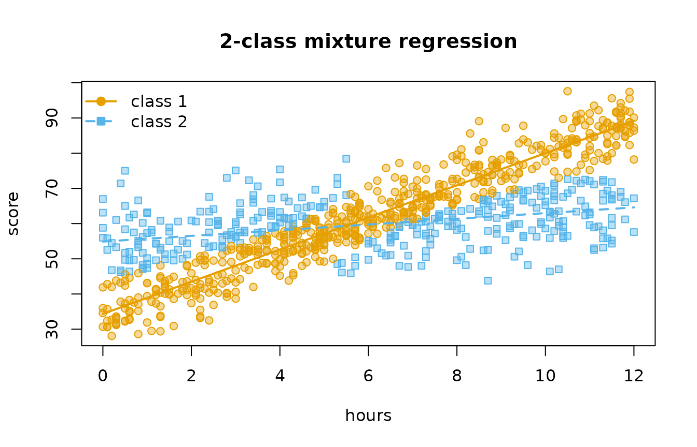
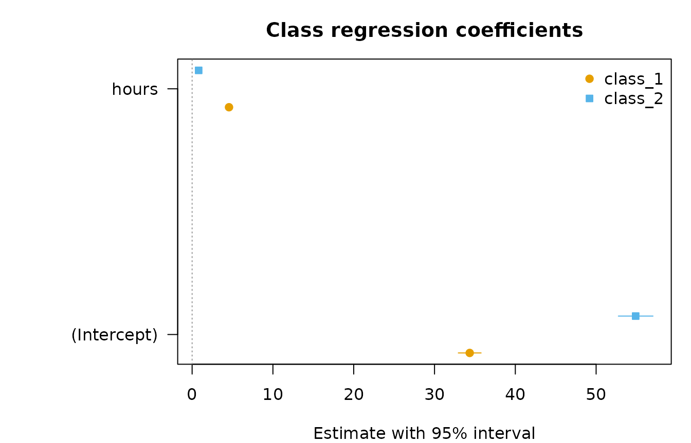
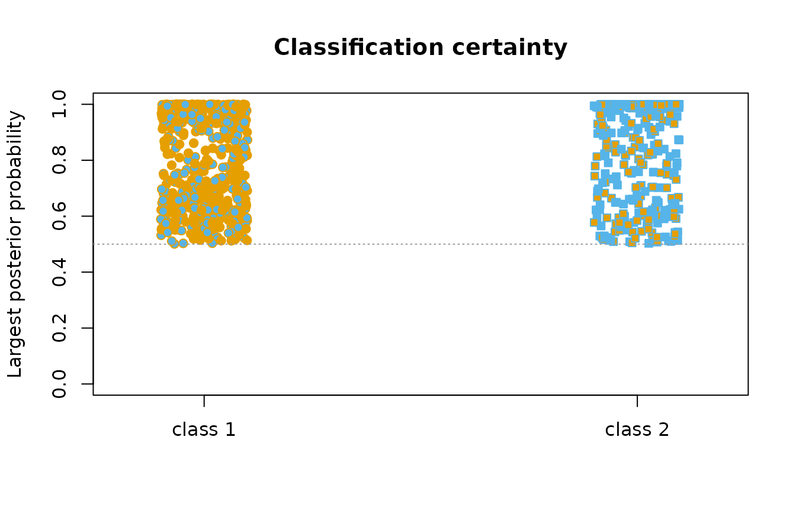

Mixture regression
Written by Mohammed Saqr and Sonsoles López-Pernas
Source:vignettes/articles/mixture-regression.Rmd
mixture-regression.RmdA single regression assumes that one line describes everyone. Mixture regression drops that assumption: the data are taken to come from a small number of latent classes, each with its own regression, and the model estimates the regressions, how common each class is, and how probably each observation belongs to each class — all at once. The method goes by several names: clusterwise regression, latent class regression, regression mixture (DeSarbo and Cron 1988; Wedel and DeSarbo 1995).
mixture_regression() fits it for continuous
("gaussian"), binary or binomial ("binomial"),
count ("poisson", and "negative_binomial" for
overdispersed counts) and ordered ("ordinal", cumulative
logit) outcomes, at one level or two:
| Question | Call |
|---|---|
| Do observations follow different regressions? | mixture_regression(y ~ x, data, n_classes) |
| Do groups (persons, schools) follow different regressions? | mixture_regression(..., id = "person", class_level = "group") |
| Do groups differ in how often their observations follow each regression? | mixture_regression(..., id = "person", n_group_classes = 2) |
| What predicts which class an observation (or group) is in? |
membership = ~ z,
group_membership = ~ v
|
| Is some effect the same in every class? | common = ~ x2 |
| How many classes? | enumerate_regressions(..., n_classes = 1:4) |
The data
study_hours is simulated so that the truth is known. 150
students report six weeks each. In each week a student studies with a
deep or a surface strategy, and the strategy decides
how hours turn into a quiz score: deep weeks gain about 4.5 points per
hour from a base of 35, surface weeks under a point per hour from a base
of 55. Steady students study deeply in most weeks, erratic students in
few. The generating strategy and student type are kept in the data so
recovery can be checked; the models never see them.
library(latents)
head(study_hours)
#> student week hours sleep motivation score passed questions strategy student_type
#> 1 1 1 10.2 5.7 -0.08 67.8 0 2 surface erratic
#> 2 1 2 2.6 6.4 -0.08 59.5 0 2 surface erratic
#> 3 1 3 10.1 6.4 -0.08 55.9 1 2 surface erratic
#> 4 1 4 8.7 6.7 -0.08 52.5 0 5 surface erratic
#> 5 1 5 11.3 9.5 -0.08 89.4 0 2 deep erratic
#> 6 1 6 5.7 6.7 -0.08 58.0 0 3 surface erraticOne class per observation
fit <- mixture_regression(score ~ hours, data = study_hours, n_classes = 2,
n_starts = 5, seed = 1)
fit
#> Mixture of gaussian regressions: 2 classes (one class per row)
#> score ~ hours
#> 900 rows | log likelihood -3144.0074 | BIC 6335.63 | entropy 0.443
#> Converged: TRUE | iterations: 42 | best likelihood reached by 5 of 5 completed starts (6 run)
#>
#> Classes
#>
#> Class Share Expected Rows assigned Avg. posterior Residual SD
#> ------- ----- -------- ------------- -------------- -----------
#> Class 1 0.564 507.55 573 0.788 5.24
#> Class 2 0.436 392.45 327 0.829 6.89
#>
#> Regression coefficients (95% CI)
#>
#> Class Term Estimate 95% CI p
#> ------- --------- -------- -------------- -----
#> Class 1 Intercept 34.35 [32.94, 35.76] <.001
#> Class 1 hours 4.57 [ 4.36, 4.77] <.001
#> Class 2 Intercept 54.90 [52.75, 57.04] <.001
#> Class 2 hours 0.81 [ 0.48, 1.14] <.001
#>
#> Every table: get_results(x, what = ), e.g. "classes", "membership", "fit", "assignments".The two classes are the two strategies: a steep regression from a low
base and a flat one from a high base. Every table comes from
get_results(); the class table gives each class’s share,
its residual standard deviation and how certainly its members are
assigned.
get_results(fit, "classes")
#> Classes
#>
#> Class Share Expected Rows assigned Avg. posterior Residual SD
#> ------- ----- -------- ------------- -------------- -----------
#> Class 1 0.564 507.55 573 0.788 5.24
#> Class 2 0.436 392.45 327 0.829 6.89get_results(fit, "assignments") gives one row per
observation. Because these data carry the generating strategy, the
recovery table cross-tabulates the assigned classes against it:
get_results(fit, "recovery", data = study_hours, truth = "strategy")
#> Recovery of a known classification
#>
#> Assigned strategy Rows Share of assigned
#> -------- -------- ---- -----------------
#> Class 1 deep 448 0.782
#> Class 2 deep 49 0.150
#> Class 1 surface 125 0.218
#> Class 2 surface 278 0.850
plot(fit)
How many classes?
enumerate_regressions() fits a range of class counts and
returns their fit statistics in one table, marking the minimum-BIC
model.
classes <- enumerate_regressions(score ~ hours, data = study_hours,
n_classes = 1:4, n_starts = 3, seed = 1)
classes
#> Mixture regression class enumeration
#>
#> n_classes n_group_classes log_likelihood n_parameters bic icl entropy smallest_share converged
#> 1 1 -3245 3 6510 6510 NA 1.00000 TRUE
#> 2 1 -3144 7 6336 7030 0.4432 0.43526 TRUE
#> 3 1 -3133 11 6341 7272 0.5292 0.07523 TRUE
#> 4 1 -3126 15 6354 7460 0.5571 0.07192 TRUE
#> best_bic
#> FALSE
#> TRUE
#> FALSE
#> FALSE
#>
#> One model: get_results(x, "model", n_classes = ).With bootstrap = B, each row also gets a parametric
bootstrap likelihood-ratio test of one class fewer (McLachlan 1987):
outcomes are simulated from the smaller model, both models are refitted,
and the p-value is the share of simulated statistics at least as large
as the observed one. It is slow — 2 B refits per row — so
it is not run here.
What predicts the class?
membership adds a multinomial logit for class
membership. Here sleep before the quiz makes a deep week more likely, so
it should lower the odds of the surface class:
with_sleep <- mixture_regression(score ~ hours, data = study_hours, n_classes = 2,
membership = ~ sleep, n_starts = 5, seed = 1)
get_results(with_sleep, "membership")
#> Class membership (log odds, 95% CI)
#>
#> Class Term Estimate 95% CI p Odds ratio
#> ------- --------- -------- -------------- ---- ----------
#> Class 2 Intercept 1.56 [ 0.22, 2.89] .023 4.74
#> Class 2 sleep -0.26 [-0.45, -0.07] .007 0.77The coefficients are estimated jointly with the regressions — a one-step model, not a regression on assigned classes — so classification error does not attenuate them.
Groups that share a class
When every row of a group belongs to the same class, pass
id and class_level = "group". A group’s
evidence for a class is the product of its rows’ likelihoods, so classes
of students are separated far more sharply than classes of
weeks could be. The binary passed outcome in these data
depends on the student’s type, not on the week:
students <- mixture_regression(passed ~ hours, data = study_hours, n_classes = 2,
family = "binomial", id = "student",
class_level = "group", membership = ~ motivation,
n_starts = 5, seed = 1)
students
#> Mixture of binomial regressions: 2 classes (one class per `student`)
#> passed ~ hours
#> 900 rows in 150 groups | log likelihood -540.8146 | BIC 1111.69 | entropy 0.668
#> Converged: TRUE | iterations: 16 | best likelihood reached by 6 of 6 completed starts (6 run)
#>
#> Classes
#>
#> Class Share Expected Groups assigned Avg. posterior
#> ------- ----- -------- --------------- --------------
#> Class 1 0.517 77.61 78 0.903
#> Class 2 0.483 72.39 72 0.900
#>
#> Regression coefficients (95% CI)
#>
#> Class Term Estimate 95% CI p Odds ratio
#> ------- --------- -------- ---------------- ----- ----------
#> Class 1 Intercept -2.463 [-3.098, -1.827] <.001 0.085
#> Class 1 hours 0.514 [ 0.391, 0.636] <.001 1.671
#> Class 2 Intercept 0.070 [-0.455, 0.596] .793 1.073
#> Class 2 hours -0.041 [-0.122, 0.040] .318 0.960
#>
#> Every table: get_results(x, what = ), e.g. "classes", "membership", "fit", "assignments".
get_results(students, "membership")
#> Class membership (log odds, 95% CI)
#>
#> Class Term Estimate 95% CI p Odds ratio
#> ------- ---------- -------- -------------- ----- ----------
#> Class 2 Intercept -0.15 [-0.88, 0.58] .688 0.86
#> Class 2 motivation -1.82 [-2.78, -0.86] <.001 0.16A mixture of logistic regressions with a single binary outcome per
class assignment is not identified — any mixture of Bernoulli
distributions is a Bernoulli distribution (Follmann and Lambert 1991) —
so mixture_regression() refuses
family = "binomial" with one trial per row unless the class
is shared by a group:
mixture_regression(passed ~ hours, data = study_hours, n_classes = 2,
family = "binomial")
#> Error:
#> ! A mixture of logistic regressions with one binary outcome per class assignment is not identified: a mixture of Bernoulli distributions is itself a Bernoulli distribution (Follmann and Lambert 1991). Give each class assignment several outcomes with `id` and `class_level = "group"`, or supply binomial counts as `cbind(successes, failures)`.Two levels: groups that differ in their mix
The deep/surface strategy changes from week to week, but steady and erratic students use the strategies in different proportions. That is a two-level mixture (Vermunt 2003): rows keep their own regression class, and a latent group class shifts the class probabilities of all rows in its groups.
two_level <- mixture_regression(score ~ hours, data = study_hours, n_classes = 2,
id = "student", n_group_classes = 2,
membership = ~ sleep, group_membership = ~ motivation,
n_starts = 5, seed = 1)
summary(two_level)
#> Model fit
#>
#> Family gaussian
#> Nesting two-level
#> Classes 2
#> Group classes 2
#> Observations 900
#> Groups 150
#> Parameters 11
#> Log likelihood -3091.78
#> AIC 6205.56
#> BIC 6238.68
#> SABIC 6203.86
#> ICL 6785.00
#> Entropy 0.562
#> Smallest class 42.1%
#> Converged yes
#>
#> Regression coefficients (95% CI)
#>
#> Class Term Estimate 95% CI p
#> ------- --------- -------- -------------- -----
#> Class 1 Intercept 34.63 [33.43, 35.83] <.001
#> Class 1 hours 4.52 [ 4.36, 4.69] <.001
#> Class 2 Intercept 55.34 [53.56, 57.12] <.001
#> Class 2 hours 0.72 [ 0.45, 0.99] <.001
#>
#> Classes
#>
#> Class Share Expected Groups assigned Avg. posterior Residual SD
#> ------- ----- -------- --------------- -------------- -----------
#> Class 1 0.579 521.40 532 0.873 5.28
#> Class 2 0.421 378.60 368 0.845 6.79
#>
#> Class membership (log odds, 95% CI)
#>
#> Model Class Term Estimate 95% CI p Odds ratio
#> ----------- ------------- ------------------------ -------- -------------- ----- ----------
#> group_class Group class 2 Intercept -0.13 [-1.02, 0.77] .783 0.88
#> group_class Group class 2 motivation -1.87 [-2.80, -0.93] <.001 0.15
#> class Class 2 Intercept, group class 1 1.34 [-0.52, 3.20] .157 3.84
#> class Class 2 Intercept, group class 2 4.25 [ 2.17, 6.33] <.001 70.05
#> class Class 2 sleep -0.47 [-0.74, -0.20] <.001 0.63
#>
#> Group classes
#>
#> Group class Class Probability Group share Groups assigned
#> ------------- ------- ----------- ----------- ---------------
#> Group class 1 Class 1 0.861 0.513 76
#> Group class 1 Class 2 0.139 0.513 76
#> Group class 2 Class 1 0.282 0.487 74
#> Group class 2 Class 2 0.718 0.487 74The group_classes table is the heart of it: within each
group class, the probability of each regression class. The group-class
membership model shows motivation separating the two kinds of student,
and the class model shows the week-level effect of sleep.
get_results(two_level, "recovery", data = study_hours,
truth = "student_type", by = "group_class")
#> Recovery of a known classification
#>
#> Assigned student_type Groups Share of assigned
#> ------------- ------------ ------ -----------------
#> Group class 1 steady 69 0.908
#> Group class 2 steady 8 0.108
#> Group class 1 erratic 7 0.092
#> Group class 2 erratic 66 0.892Counts, shared effects and equal variances
The Poisson family takes counts, and offset() terms for
exposure. common names predictors whose coefficient is the
same in every class; for the Gaussian family
variance = "equal" shares one residual standard
deviation.
asked <- mixture_regression(questions ~ hours + sleep, data = study_hours, n_classes = 2,
family = "poisson", common = ~ sleep, n_starts = 5, seed = 1)
get_results(asked, "coefficients")
#> Regression coefficients (95% CI)
#>
#> Class Term Estimate 95% CI p Rate ratio
#> ----------- --------- -------- ---------------- ----- ----------
#> Class 1 Intercept 0.558 [ 0.243, 0.873] <.001 1.75
#> Class 1 hours 0.104 [ 0.083, 0.125] <.001 1.11
#> Class 2 Intercept 1.508 [ 1.020, 1.996] <.001 4.52
#> Class 2 hours -0.110 [-0.197, -0.022] .014 0.90
#> All classes sleep -0.019 [-0.061, 0.022] .361 0.98exp_estimate is the rate ratio of each coefficient.
Uncertainty
Standard errors come from the observed information by default. Scores
are analytic (the posterior expectation of the complete-data score), and
the information is their numerical derivative.
vcov_type = "robust" gives the sandwich estimator,
clustered on the independent unit — the row, or the group when
id defines one, including a single-level fit given
id.
get_results(fit, "coefficients", vcov_type = "robust")
#> Regression coefficients (95% CI)
#>
#> Class Term Estimate 95% CI p
#> ------- --------- -------- -------------- -----
#> Class 1 Intercept 34.35 [32.77, 35.94] <.001
#> Class 1 hours 4.57 [ 4.34, 4.79] <.001
#> Class 2 Intercept 54.90 [52.71, 57.08] <.001
#> Class 2 hours 0.81 [ 0.46, 1.15] <.001
plot(fit, what = "coefficients")
p_adjusted applies the Benjamini-Hochberg correction
across the slopes.
Prediction and simulation
predict() gives the class-averaged mean
("response"), every class’s mean
("class_response"), or — when the outcome is present — the
posterior class probabilities of new rows ("posterior").
simulate() draws new outcomes from the fitted model, which
is what the bootstrap test uses.
new_weeks <- data.frame(hours = c(1, 6, 11))
predict(fit, new_weeks, type = "class_response")
#> row class prior fitted
#> 1 1 class_1 0.564 38.9
#> 2 2 class_1 0.564 61.7
#> 3 3 class_1 0.564 84.6
#> 4 1 class_2 0.436 55.7
#> 5 2 class_2 0.436 59.7
#> 6 3 class_2 0.436 63.8Checking a solution
Mixture likelihoods have local maxima.
mixture_regression() starts EM from the residuals of a
pooled regression and from n_starts random partitions, and
the starts table shows how many starts reached the best
likelihood. A solution reached by one start only deserves more
starts.
get_results(fit, "starts")
#> Starts
#>
#> start kind log_likelihood converged iterations stage degenerate selected
#> ----- --------- -------------- --------- ---------- --------- ---------- --------
#> 1 residuals -3144.01 yes 49 completed no no
#> 2 random -3144.01 yes 47 completed no no
#> 3 random -3144.01 no 50 screened no no
#> 4 random -3144.01 yes 42 completed no yes
#> 5 random -3144.01 yes 46 completed no no
#> 6 random -3144.01 yes 43 completed no no
plot(fit, what = "posteriors")
How this compares with other software
The single-level and group-level models match flexmix
(Leisch 2004): the same likelihood at the same parameters, and the same
binomial and Poisson estimates. flexmix divides the
Gaussian residual sum of squares by n - p, so its Gaussian
estimates are not quite the maximum-likelihood ones and
mixture_regression() reaches a slightly higher likelihood.
flexmix has no two-level model, no analytic standard errors
(it refits with optim()), and no bootstrap likelihood-ratio
test.
References
DeSarbo, W. S., & Cron, W. L. (1988). A maximum likelihood methodology for clusterwise linear regression. Journal of Classification, 5, 249–282.
Follmann, D. A., & Lambert, D. (1991). Identifiability of finite mixtures of logistic regression models. Journal of Statistical Planning and Inference, 27, 375–381.
Leisch, F. (2004). FlexMix: A general framework for finite mixture models and latent class regression in R. Journal of Statistical Software, 11(8).
McLachlan, G. J. (1987). On bootstrapping the likelihood ratio test statistic for the number of components in a normal mixture. Applied Statistics, 36, 318–324.
Vermunt, J. K. (2003). Multilevel latent class models. Sociological Methodology, 33, 213–239.
Wedel, M., & DeSarbo, W. S. (1995). A mixture likelihood approach for generalized linear models. Journal of Classification, 12, 21–55.